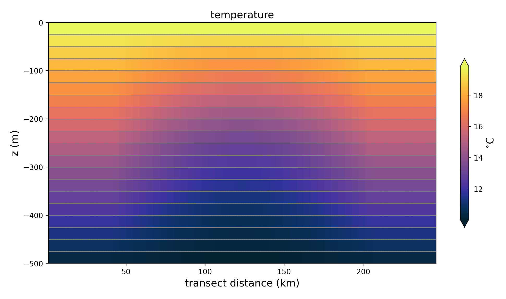

internal wave
The ocean/internal_wave test group induces internal wave propagation and is documented in
Ilicak et al. (2012) <https://doi.org/10.1016/j.ocemod.2011.10.003>_.
suppported models
These tasks support only MPAS-Ocean.
default task
description
The test case is characterized by stable stratification with a horizontal perturbation to the stratification that induces internal waves.
{kind=link}
Two variants are given for different vertical advection schemes, standard
for flux-form advection and vlr for vertical Lagrangian-remapping.
mesh
The domain is planar and periodic on the zonal boundaries and solid on the
meridional boundaries. Only 5km resolution is tested by default, but the
resolution may be changed with the resolution config option. The domain is
20km by 250km, as given by the config options lx and ly.
vertical grid
There are no restrictions on the vertical grid inherent to the test case except that there should be sufficient vertical levels to capture the stratification structure.
# Options related to the vertical grid
[vertical_grid]
# the type of vertical grid
grid_type = uniform
# Number of vertical levels
vert_levels = 20
# Depth of the bottom of the ocean
bottom_depth = 500.0
# The type of vertical coordinate (e.g. z-level, z-star)
coord_type = z-level
# Whether to use "partial" or "full", or "None" to not alter the topography
partial_cell_type = None
# The minimum fraction of a layer for partial cells
min_pc_fraction = 0.1
initial conditions
Salinity is constant throughout the domain at the value given by the config
option background_salinity (35 PSU by default). The initial temperature
has a linear background stratification from 20.1 degrees C (config option
surface_temperature) to 10.1 degrees C (config option
bottom_temperature). There is a sinusoidal perturbation in the center of
the domain with amplitude given by the config option
temperature_difference, 2 degrees C by default. The width of the
perturbation is given by 2 times the config option amplitude_width_dist or
2 times the amplitude_width_frac times ly.
forcing
N/A
time step and run duration
The time step for forward integration is 5 minutes. The run duration is 3 time steps.
config options
The following config section is specific to this test case:
# config options for internal wave test cases
[internal_wave]
# the width of the domain (km)
lx = 20.0
# the length of the domain (km)
ly = 250.0
# the size of grid cells (km)
resolution = 5.0
# Logical flag that determines if locations of features are defined by distance
# or fractions. False means fractions.
use_distances = False
# Temperature of the surface in the northern half of the domain.
surface_temperature = 20.1
# Temperature of the bottom in the northern half of the domain.
bottom_temperature = 10.1
# Difference in the temperature field between top and bottom
temperature_difference = 2.0
# Fraction of domain in Y direction the temperature gradient should be linear
# over.
amplitude_width_frac = 0.33
# Width of the temperature gradient around the center sin wave. Default value
# is relative to a 500km domain in Y.
amplitude_width_dist = 50e3
# Salinity of the water in the entire domain.
salinity = 35.0
# Coriolis parameter for the entire domain
coriolis_parameter = 0.0
cores
The number of cores is determined by goal_cells_per_core and
max_cells_per_core in the ocean section of the config file.
RPE task
description
The Reference Potential Energy (RPE) task consists of several forward steps at
different values of the del2 horizontal viscosity. Two variants are given for
different vertical advection schemes, standard for flux-form advection and
vlr for vertical Lagrangian-remapping. Analysis is run to compare the RPE
evolution through time for each of the forward runs with different viscosities.
mesh
See default task.
vertical grid
See default task.
initial conditions
See default task.
forcing
N/A
time step and run duration
The time step for forward integration is 5 minutes. The run duration is 20 days.
config options
In addition to the config options in section internal_wave, the following
config options are also used:
# config options for the internal wave RPE tasks
[internal_wave_rpe]
# Viscosity values to test for rpe test case
viscosities = 0.01, 1, 15, 150
# plot time (days)
plot_time = 20.0
# min and max temperature range
min_temp = 10.0
max_temp = 20.0